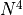

Why Tensorflow?¶
Simply put: We need to make many large, dense matrix operations. This is ideally suited to a GPU architecture. Tensorflow is designed for deep learning problems, that similar benefit from using the GPU for large matrix problems, so it has many useful numerical algorithms for these problems that automatically run on GPUs.
There are two main use cases for tensorflow in this package, both stem from the presence of the Coulomb interaction which acts between all states - leading to a large, dense matrix of Coulomb matrix elements. For a numerical grid of size NxN, the coulomb matrix elements for a matrix of size  x
- Solving the time dynamics, requires solving a large set of coupled differential equations. At each of the many time steps, there are many large, dense matrix multiplications, these benefit from GPU usage via Tensorflow. The differential equation for the process is written as a Tensorflow graph.
- The crystal has exciton states (a quasiparticle of bound electron-hole pairs), ordinarily one solves an eigenvalue problem to get the exact states. Since we are mostly interested in the lowest state, we can use a variational method to find the lowest eigenstate. Using Tensorflow’s in-built optimization tools to minimise the problem and find that eigenstate is much quicker than solving the eigenvalue problem that for large; particularly for dense computational grids. In particular one varies the state, to minimise .